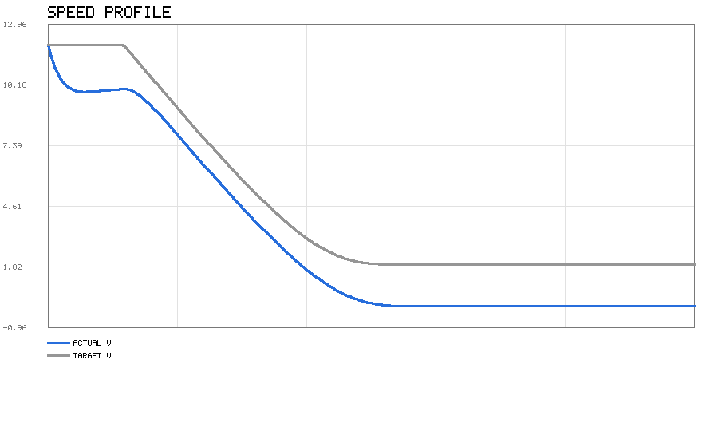
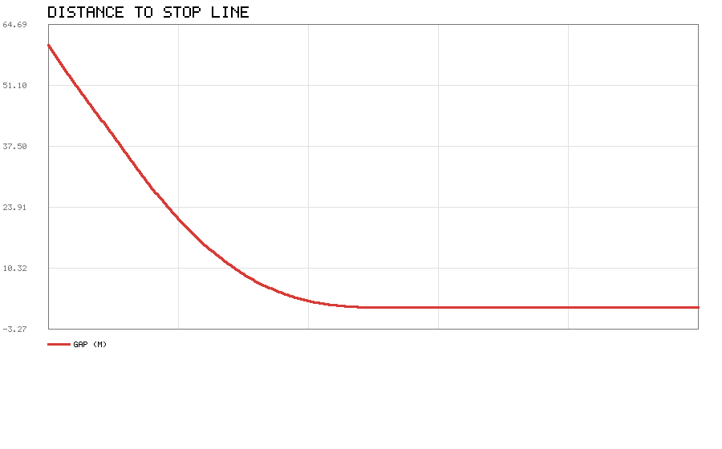
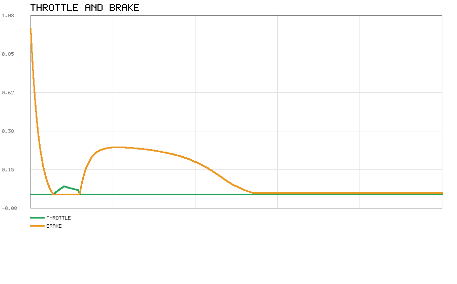
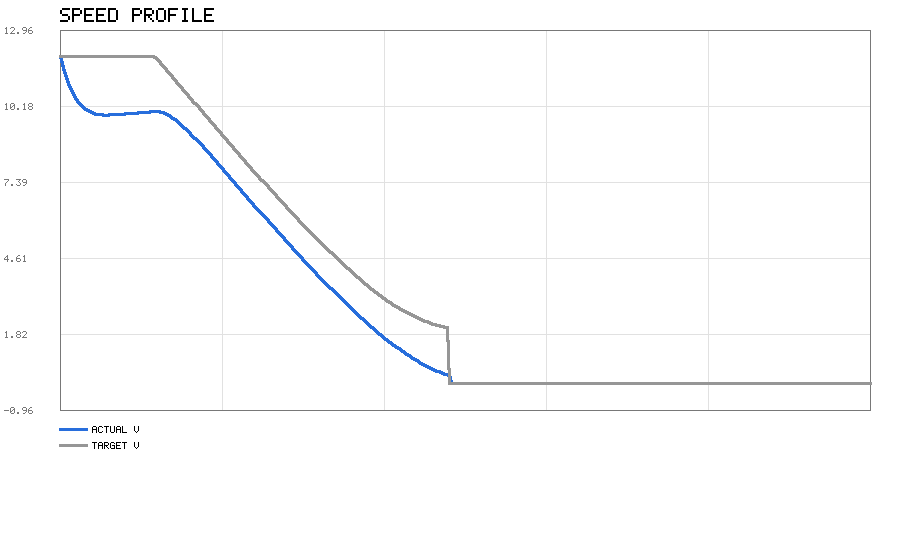
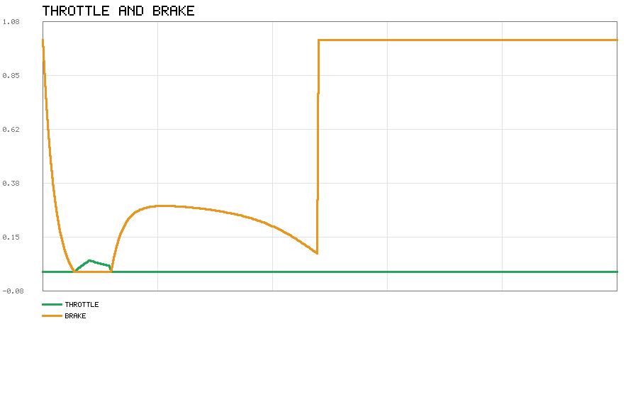
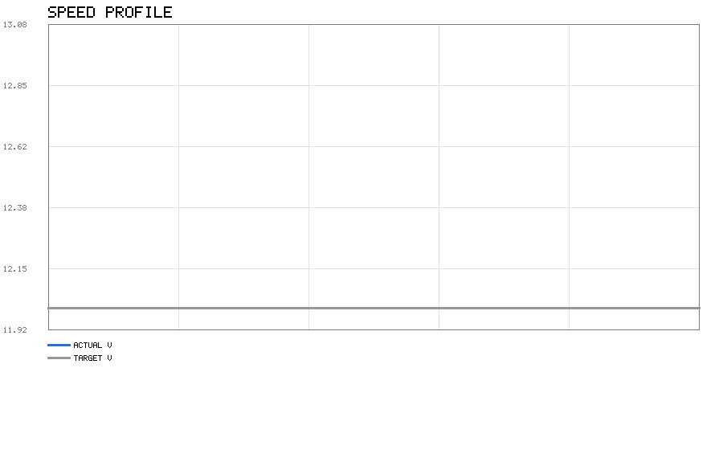
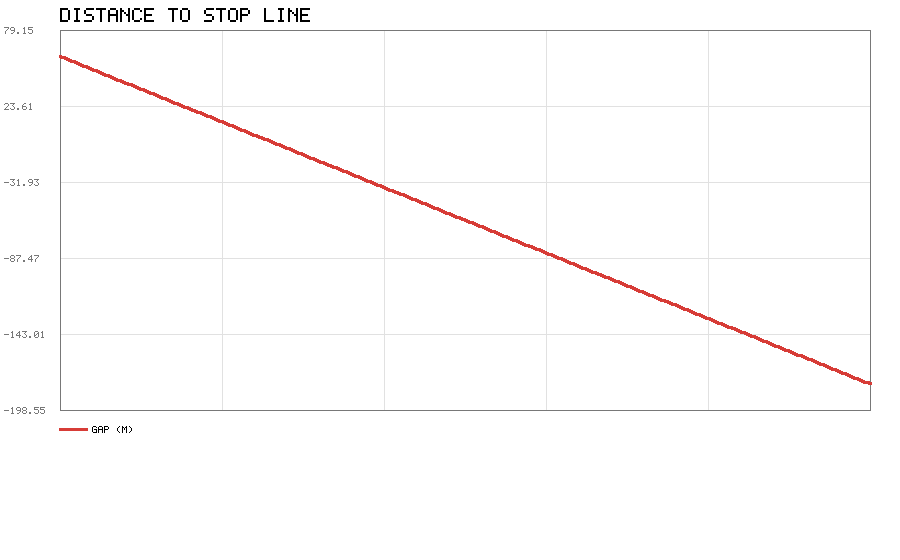
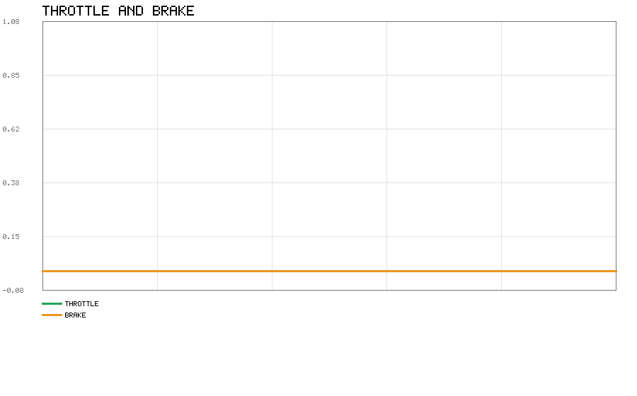
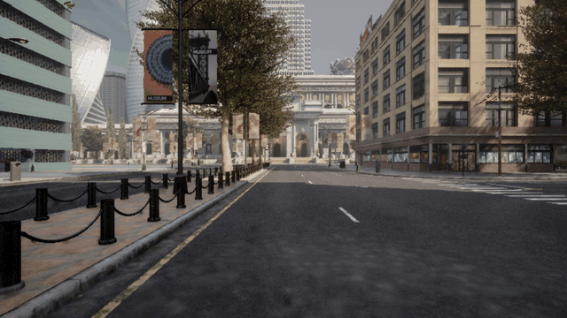

CARLA 交通信号灯识别与响应
车辆接近信号灯路口时，读取灯色和到停止线的距离，决定该停车、减速还是直接 通过，再用纵向控制器执行。
代码在 src/ground/carla_traffic_light/。
为什么做这个
地面载具板块已经有不少模块，但把现有文档翻了一遍，「信号灯」和 「traffic light」一次都没有出现：
| 关键词 | 覆盖情况 |
|---|---|
| 交通标志 | carla_tsr_ros 已做 |
| 车道保持 | 已有 |
| 纵向速度控制 | 已有 |
| 交通信号灯 | 没有 |
CARLA 自带的信号灯 API 也足够用，实测 get_state()、get_stop_waypoints()
都能正常返回。
决策规则
红灯
必定停车。任意时刻的目标速度按停车曲线给：
v_target = sqrt(2 · a_comfort · (d − margin))
d 是剩余距离，a_comfort 是舒适减速度（默认 2.0 m/s²），margin 是相对停止线 留的余量（默认 0.5 m）。这样速度随距离平方根下降，到停止线时自然归零。
如果按最大减速度（默认 6.0 m/s²）都停不住，就转为全力制动。
黄灯
黄灯不是简单的"减速"，要看当前速度下能不能在停止线前停住：
制动距离 d_brake = v² / (2 · a_max)
d_brake ≤ d → 能停，减速停车
d_brake > d → 停不住，保持通过
这也是真实信号灯辅助系统的做法：强行急刹反而更容易被追尾。
两个例外：
- 速度已经低于
min_speed（默认 0.3 m/s）时直接停——都在慢慢蹭了， 停下来总比越线安全 - 距离小于
yellow_min_gap（默认 1.0 m）时一律通过
绿灯 / 灯不亮
正常通过，不限制速度。
已经越过停止线
不再因红灯停车，这是为了避免车压在线上时来回犹豫。
纵向控制器
CARLA 的车辆控制接口吃的是 throttle ∈ [0,1] 和 brake ∈ [0,1]，不直接给
加速度，所以要有一层转换：
a_cmd = a_ff + kp·(v_target − v) + ki·∫(v_target − v)
a_cmd ≥ 0 → 油门 = a_cmd · throttle_gain
a_cmd < 0 → 刹车 = −a_cmd · brake_gain
为什么需要前馈
这一点是调试时发现的。停车曲线按 a = 2.0 m/s² 设计，如果只用 PI：
- 速度一接近目标，误差变小，刹车随之变弱
- 结果差一点没停住，冲过停止线
实测：黄灯场景下车辆减速到 3.29 m/s、距停止线 2.46 m 时，PI 只给出 0.39 的 刹车（约 2.3 m/s²），最后压线通过。
加上前馈 a_ff = −a_comfort 之后，曲线规定的减速度直接喂进去，PI 只负责
修正偏差，跟踪精度立刻就上来了。
运行结果
参数：舒适减速 2.0 m/s²，最大减速 6.0 m/s²，停车余量 0.5 m，初速 12 m/s， 初始距停止线 60 m。
| 灯色 | 末速 | 距停止线 | 判决 |
|---|---|---|---|
| 红灯 | 0.000 m/s | 停在 1.416 m | ✓ 正确停车 |
| 黄灯 | 0.000 m/s | 停在 1.541 m | ✓ 能停住就停 |
| 绿灯 | 12.000 m/s | 通过 −180 m | ✓ 正常通过 |
红灯

蓝线是实际速度，灰线是停车曲线给的目标速度。两条线基本重合，说明控制器跟得住。

距离单调下降到 0 附近并稳定住，没有反向穿过。

前段给一点油门保持速度，进入停车曲线后刹车逐渐加深。
黄灯

黄灯在 60 m 外时按最大减速能停住（需要 12 m），所以选择和红灯一样的策略。
距离从 60 m 平滑降到 1.5 m 后保持，没有越过停止线。

油门全程为 0，刹车量在末段升到满值并保持，对应车辆停在停止线前。
绿灯

不加限制，保持 12 m/s 通过。

距离一路下降、穿过停止线后变为负值（到 −180 m），说明没有停车动作。

离线模型没有行驶阻力，保持 12 m/s 匀速既不需要油门也不需要刹车，两条曲线都贴在 0 上。
CARLA 真机运行
在 Ubuntu 20.04 上用 CARLA 客户端连 Windows 上跑的 CarlaUE4 服务端（0.9.16 ↔ 0.9.16）， 真实场景实测。CARLA 本身就是客户端/服务端分离的架构，两边分机器部署是官方支持的方式。

| 指标 | 数值 |
|---|---|
| 目标灯 | id=23，强制设为红灯 |
| 起始距离 | 52.0 m |
| 停车决策次数 | 2675 |
| 减速决策次数 | 0 |
| 通过决策次数 | 0 |
| 最近距离 | 1.44 m |
| 末速 | 0.00 m/s |
| 末态灯色 | Red |
车从 52 m 外开始，按停车曲线减速，最终停在停止线前 1.44 米。全程灯色为红， 没有任何一次"通过"决策。
调试这一段时踩了几个坑，记下来免得后面再犯：
- 不能在停止线上生成自车。最初直接用
stop_waypoints[0].transform生成， 结果距离一上来就是 0，全程"已越过停止线"，什么也测不到。要沿车道往回退。 - 必须给转向。只控油门刹车的话车会直直冲出路口撞墙，最后卡在那里速度一直是 0。
- 只盯目标灯。生成车用的是 A 灯，行驶时如果扫描所有灯取最近的那个，可能盯着 B 灯（B 是绿的），于是根本不停车。
- 异步模式会让车一卡一卡。服务器按自己帧率跑，客户端 20 Hz 发指令，两者对不齐。
改用
synchronous_mode+fixed_delta_seconds，由客户端world.tick()推帧后就平滑了。
CARLA 里的实现
carla_runner.py 做的事：
- 连接 CARLA，找一台车生成到信号灯停止线附近
- 挂一个前视 RGB 相机，用于存截图
- 每帧：
- 读自车位置与速度
- 在信号灯里找前方最近的、且停止线在车前的那个
- 读灯色，用自车到
stop_waypoints的前向投影距离作为d - 调
decide()得动作与目标速度 - 调控制器得油门/刹车，写回车辆
- 按
save_every间隔存截图
前向投影那一步很关键：直接用欧氏距离的话，车从停止线旁边开过去时距离会先 变小再变大，判定会抖动。投到车头方向上就单调了。
环境准备
开发和验证都在 Ubuntu 20.04 + Python 3.8 上做。代码里没有任何平台相关调用。
安装 CARLA 客户端
推荐直接用 CARLA 自带 PythonAPI 里的 egg，版本一定对得上：
export CARLA_HOME=~/CARLA_0.9.13
export PYTHONPATH=$PYTHONPATH:$CARLA_HOME/PythonAPI/carla/dist/carla-0.9.13-py3.7-linux-x86_64.egg
也可以 pip3 install carla==0.9.13。
验证：
python3 -c "import carla; print('ok')"
运行方法
离线仿真（不需要 CARLA）
cd src/ground/carla_traffic_light/scripts
python3 main.py # 红灯
python3 main.py --light Yellow
python3 main.py --all-lights # 红黄绿依次跑
连接 CARLA
cd ~/CARLA_0.9.13
./CarlaUE4.sh -quality-level=Low -windowed -ResX=1000 -ResY=700
另开终端：
cd src/ground/carla_traffic_light/scripts
python3 main.py --carla --duration 30
launch 启动
roslaunch carla_traffic_light offline.launch
roslaunch carla_traffic_light main.launch
两个 launch 的参数都是 arg，由 args 拼成命令行传给 main.py。脚本本身不
import rospy、也不收发 ROS 消息，roslaunch 只负责把它当普通可执行文件拉起，
所以配置只能走命令行，不能写成 <param>。覆盖参数用 名字:=值：
roslaunch carla_traffic_light main.launch carla_host:=192.168.148.1 duration:=60
roslaunch carla_traffic_light offline.launch light:=Green
参数
config/tl_params.yaml：
| 参数 | 默认 | 含义 |
|---|---|---|
comfort_decel |
2.0 | 舒适减速度 (m/s²)，决定停车曲线 |
max_decel |
6.0 | 最大减速度，用于判断能否停住 |
yellow_min_gap |
1.0 | 黄灯近距离直接通过的距离 (m) |
stop_margin |
0.5 | 相对停止线的停车余量 (m) |
min_speed |
0.3 | 低于此速度直接刹停 (m/s) |
kp / ki |
0.8 / 0.15 | PI 增益 |
integral_max |
3.0 | 积分限幅，防饱和 |
环境与验证
以下结果都在 Ubuntu 20.04 + Python 3.8 上实际跑出：
$ python3 -m unittest discover -s tests
..............................................
----------------------------------------------------------------------
Ran 46 tests in 0.005s
OK
上面这段是加入
tests/test_launch.py之前的 Ubuntu 记录。本轮新增 4 个用例， 总数 46 → 50；新用例在 Windows + Python 3.12 上跑通，Ubuntu 侧未重跑。
$ python3 scripts/main.py --all-lights
...
三种灯色的判决都已跑完
traffic_light_logic.py 与 longitudinal.py 只依赖标准库，不需要 CARLA、不需要 GPU，因此任何装了 Python 3.8 的机器都能复现。
关于 CARLA 集成：CARLA 的客户端与服务端本来就可以分机器部署。本项目在 Windows 上跑 CarlaUE4 服务端（0.9.16）验证真机闭环。Ubuntu 侧要当客户端的话需要 0.9.16 版本的客户端库，而 PyPI 上最高只发布到 0.9.15，两者协议不兼容（0.9.15 客户端读 0.9.16 的 world 会 std::bad_alloc 崩溃），所以跨机器联调这条路没走通。真机验证只在 Windows 上做。
测试
tests/test_logic.py 一共 46 个测试，覆盖两块：
信号灯决策（traffic_light_logic.py）
- 停车距离公式
d = v²/2a及其平方关系 - 需要减速度与停车距离互为逆运算
- 停车曲线
v = sqrt(2ad) - 红灯在远端 / 线前 / 停不住三种情况
- 目标速度随距离递减
- 已过线不再停
- 黄灯能停 / 停不住 / 距离过近 / 速度过低
- 黄灯边界条件（恰好够停应判为可停）
- 非法灯色与非法参数
纵向控制器（longitudinal.py）
- 无误差不输出
- 偏慢给油门、偏快给刹车
- 输出限幅到 [0,1]
- 停车指令给满刹车
- 积分限幅
- 死区抑制抖动
- reset 清空状态
- 闭环收敛到目标速度
- 能从 10 m/s 刹停
其中"黄灯边界条件"那条是把 d_brake == d 的临界情况固定住，避免以后改参数
时把判据改偏。
另有 tests/test_launch.py 4 个用例，专门盯 launch 与 package.xml 的接线：
main.launch启动时必须带--carla，否则跑的是离线分支args里引用的每个$(arg x)都得有<arg>声明，否则 roslaunch 直接报错- launch 里不得出现
<param>/<rosparam>——脚本不读 ROS 参数 - package.xml 不得声明代码里没用到的 ROS 依赖
这 4 条都是"配了但不生效"类的错，跑起来不报错、只看输出也不易发现，所以 放进单元测试。
文件结构
src/ground/carla_traffic_light/
├── package.xml / CMakeLists.txt / setup.py
├── launch/
│ ├── main.launch 连 CARLA
│ └── offline.launch 离线
├── config/tl_params.yaml
├── scripts/
│ ├── traffic_light_logic.py 决策（纯 Python）
│ ├── longitudinal.py PI + 前馈（纯 Python）
│ ├── carla_runner.py CARLA 集成
│ ├── simple_plot.py PNG 折线图
│ └── main.py 入口
├── tests/test_logic.py
└── README.md
已知限制
- 只做纵向，不转向。自车保持直线，不做跟车绕行
- 依赖 CARLA 的
get_stop_waypoints()。如果某张地图上信号灯没有停止线， 该信号灯会被跳过 - 单车，不考虑其他交通参与者